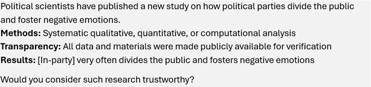
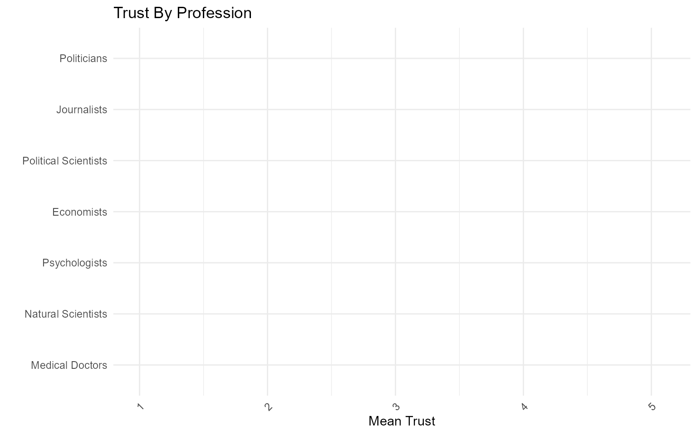
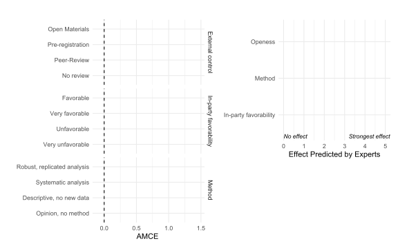
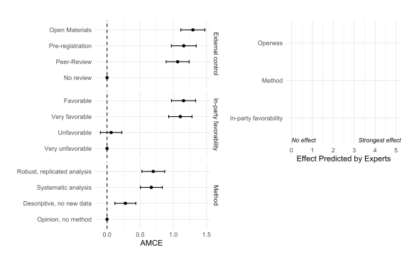
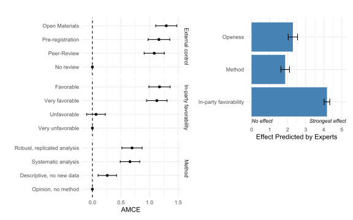
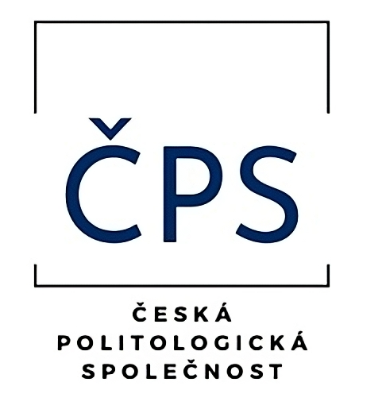

Důvěra v politology a jejich výzkum
Aarhus University
Northwestern University
Problém vlažné důvěry
Otázka: Důvěřují lidé politologům? Kdo jim důvěřuje? Co můžeme udělat, abychom posílili důvěru v náš výzkum?
Overall, scientists evoked positive perceptions given that all social evaluations and trust ratings were above the mid-point of the scales (though note that political scientists and economists evoked noticeably lower ratings of morality and trust compared to other occupations).
When asked how confident they were that various professions act in the best interests of the American public, Americans gave middling reviews of political scientists. [..] Confidence in political scientists is similar to that in journalists; Democrats are generally more confident, and Republicans less. Such confidence is generally less than that placed on economists, English professors, and historians.
Dotazování veřejnosti
- 1530 respondentů, online vzorek, kvóty, červenec 2025
- Hlavní závislá proměnná: Nakolik osobně důvěřujete politologům?
- OLS regrese s kontrolními proměnnými
Experiment
- Design s několika úrovni randomizace. Výstup měřen na škále: „Považovali byste takový výzkum za důvěryhodný?“ (11bodová škála)
- Šest opakovaných úkolů + kontroly; sedmý replikuje první
- OLS s robustními SEs shlukovanými podle respondentů
- Náročný, přesto: 67,4 % prošlo přísnou kontrolou pozornosti; 62 % v rozmezí ±1 bodu v replikačním úkolu
Experiment
Ukázka vignety

Experiment
Atributy a úrovně
| Atribut | Úrovně |
|---|---|
| Téma | a. Reprezentace b. Demokratické normy c. Populismus d. Polarizace |
| Rigoróznost metody | a. Názor, bez metody b. Deskriptivní, bez nových dat c. Systematická analýza d. Robustní, replikovaná analýza |
| Otevřenost vnější kontrole | a. Žádné praktiky b. Předregistrace c. Otevřená data d. Recenzní řízení |
| Výsledek (Příznivost vůči vlastní straně) | a. Velmi nepříznivý b. Nepříznivý c. Příznivý d. Velmi příznivý |
Expertní průzkum
Testování vůči očekáváním komunity politické vědy
- Vnímání důvěry
- Ideologická zaujatost
- Očekávání ohledně experimentálních výsledků
- Převládající pochybné výzkumné praktiky, Schneider et al. (2024)
Všechny katedry politické vědy v České republice, 9 univerzit, včetně doktorandů
Míry odpovědí podobné napříč pohlavím, typem katedry nebo senioritou
Nedůvěra je častá, rozšířená a málo souvisí s politickými názory.
Externí kontrola a ověřitelný důkaz pomáhají důvěryhodnosti politologického výzkumu.
Disciplínu čekáme otevřenou a empirickou. Pochybné praktiky ve výzkumu zůstávají ale časté.
Nedůvěra je častá, rozšířená a málo souvisí s politickými názory.
Externí kontrola a ověřitelný důkaz pomáhají důvěryhodnosti politologického výzkumu.
Disciplínu čekáme otevřenou a empirickou. Pochybné praktiky ve výzkumu zůstávají ale časté.
Důvěra v politology

Důvěra v politology

Důvěra v politology
Kolik lidí důvěřuje politologům?
Důvěra v politology
Kolik lidí důvěřuje politologům?
Asi 31 %
Důvěra v politology
Kolik lidí důvěřuje politologům?
Asi 31 %
Kolik lidí si myslíme, že nám důvěřuje?
V průměru asi 31 %
Odborní respondenti ale podcenili o kolik více to je oproti žurnalistům a politikům a o kolik méně než u přírodních věd.
Kdo důvěřuje politologům?
| Prediktor | Est. | 95% CI | p | Est. | 95% CI | p |
|---|---|---|---|---|---|---|
| Konstanta | 2.58 | 2.38–2.79 | <0.001 | 3.32 | 2.98–3.66 | <0.001 |
| Příjem | 0.09 | 0.03–0.14 | 0.002 | 0.05 | -0.01–0.10 | 0.093 |
| Žena | -0.02 | -0.11–0.08 | 0.742 | 0.02 | -0.07–0.12 | 0.633 |
| Věk (std.) | -0.13 | -0.17–-0.08 | <0.001 | -0.11 | -0.16–-0.06 | <0.001 |
| CECT (std.) | 0.02 | -0.03–0.07 | 0.391 | 0.02 | -0.03–0.07 | 0.452 |
| Ideologie | ||||||
| Ekonomická | 0.00 | -0.04–0.04 | 0.963 | |||
| Sociální | -0.01 | -0.06–0.03 | 0.500 | |||
| Transnacionální | -0.16 | -0.20–-0.12 | <0.001 | |||
| Vzdělání | (reference: | Základní) | ||||
| Střední škola | 0.09 | -0.02–0.20 | 0.115 | 0.06 | -0.05–0.17 | 0.258 |
| Vysoká škola | 0.06 | -0.08–0.19 | 0.405 | -0.03 | -0.17–0.10 | 0.607 |
| Bydliště | (reference: | <2 000) | ||||
| 2 000–19 999 | 0.03 | -0.11–0.16 | 0.721 | 0.03 | -0.11–0.16 | 0.682 |
| >20 000 | 0.03 | -0.09–0.15 | 0.634 | 0.02 | -0.10–0.14 | 0.693 |
| N | 1428 | 1428 | ||||
| R² / Adj. R² | 0.031/0.026 | 0.080/0.073 |
Kdo důvěřuje politologům?
| Prediktor | Est. | 95% CI | p | Est. | 95% CI | p |
|---|---|---|---|---|---|---|
| Konstanta | 2.65 | 2.39–2.91 | <0.001 | 1.62 | 1.38–1.85 | <0.001 |
| Přínos pro politiku | 0.35 | 0.31–0.40 | <0.001 | |||
| Ekonomická | ||||||
| Levicová zaujatost | -0.26 | -0.42–-0.09 | 0.003 | |||
| Pravicová zaujatost | -0.11 | -0.25–0.04 | 0.148 | |||
| Sociální | ||||||
| Konzervativní zaujatost | -0.06 | -0.22–0.11 | 0.500 | |||
| Liberální zaujatost | -0.12 | -0.27–0.02 | 0.091 | |||
| Transnacionální | ||||||
| Protizápadní zaujatost | -0.05 | -0.23–0.13 | 0.591 | |||
| Prozápadní zaujatost | 0.16 | 0.02–0.31 | 0.029 | |||
| Socioekonomické kontrolní proměnné | ✓ | ✓ | ||||
| N | 998 | 1356 | ||||
| R² / Adj. R² | 0.048 / 0.034 | 0.169 / 0.165 |
Nedůvěra je častá, rozšířená a málo souvisí s politickými názory.
Externí kontrola a ověřitelný důkaz pomáhají důvěryhodnosti politologického výzkumu.
Disciplínu čekáme otevřenou a empirickou. Pochybné praktiky ve výzkumu zůstávají ale časté.

Výsledky experimentu

Výsledky experimentu

Výsledky experimentu
Nedůvěra je častá, rozšířená a málo souvisí s politickými názory.
Externí kontrola a ověřitelný důkaz pomáhají důvěryhodnosti politologického výzkumu.
Disciplínu čekáme otevřenou a empirickou. Pochybné praktiky ve výzkumu zůstávají ale časté.
Budoucnost metod (podle politologů)

Pochybná výzkumná praxe
| Pochybná výzkumná praxe | % | SE | N |
|---|---|---|---|
| Metodologická přísnost | |||
| HARKing (kvantitativní) | 54% | 7.2% | 48 |
| Ignorování praktické významnosti | 47% | 6.9% | 53 |
| Redundantní publikace | 47% | 7.1% | 49 |
| Nepravdivá kvalitativní tvrzení | 37% | 6.9% | 49 |
| HARKing (kvalitativní) | 36% | 7.1% | 45 |
| Přehánění výsledků | 33% | 7.2% | 43 |
| P-hacking | 32% | 7.7% | 37 |
| Chybná interpretace nesignifikantních výsledků | 29% | 7.0% | 42 |
| Nezveřejněné recyklování dat | 25% | 6.1% | 51 |
| Vnější kontrola | |||
| Citace bez přečtení | 77% | 5.8% | 52 |
| Selektivní citace k uspokojení recenzentů | 60% | 6.7% | 53 |
| Povrchní recenzní řízení | 42% | 6.9% | 52 |
| Nezveřejnění dat/metodologie | 24% | 6.6% | 42 |
| Nekvalifikované přijetí recenzního řízení | 23% | 5.6% | 57 |
| Záměrné opomenutí protichůdných studií | 18% | 5.3% | 51 |
| Nezveřejněné střety zájmů | 13% | 4.7% | 52 |
| Akademická integrita a etické chování | |||
| Nadměrné sebecitování | 56% | 6.8% | 54 |
| Čestné autorství | 53% | 6.7% | 55 |
| Zaujatá recenze | 21% | 5.9% | 48 |
| Plagiátorství nepublikovaných myšlenek | 6% | 3.4% | 49 |
Otevřené otázky
- Jak změní generativní AI výzkumnou praxi a výuku politologie [GenAI]
- Jestli se veřejnost o externí kontrole dozví [Komunikace vědy]
- Jaké nástroje zvolit k vylepšení současné praxe [Instrument]
Děkuji za pozornost
Podpořeno:
